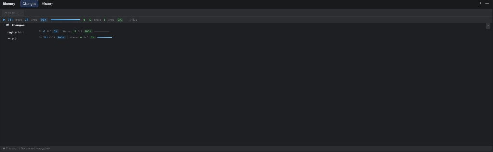
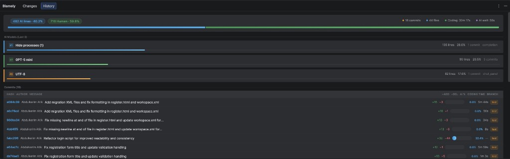
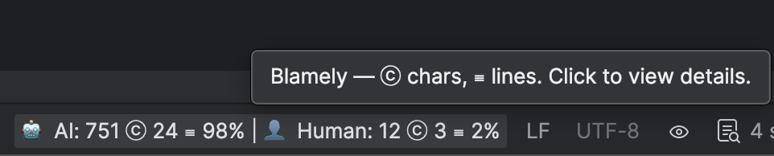

AI & Human attribution for IntelliJ and JetBrains IDEs. Track which lines are from AI (Copilot, Cursor, etc.) and which are human-written — then commit with Git notes.
refs/notes/blamely), so attribution survives rebases, merges, and cherry-picks. Blamely’s docs and CLI complement this plugin for a full workflow. blamely.ai
Changes tab (per-file AI / Human breakdown), History tab (commits, authors, AI models), and status bar (click to open details).



.git/blamely — Session and per-file blame snapshots; no workspace clutter.report.yml summary is attached to each commit via git notes --ref=blamely.# From the plugin project root (JDK 17)
./gradlew buildPluginOutput: build/distributions/Blamely-0.2.0.zip
Settings → Plugins → ⚙️ → Install Plugin from Disk → select the .zip file.
After restart, the Blamely status bar widget and tool window are available.
🤖 AI: 20 ⓒ 2 ≡ 40% | 👤 Human: 30 ⓒ 3 ≡ 60%).pre-push hook pushes refs/notes/blamely whenever you push (IDE or CLI). If you already have a pre-push hook, Blamely only appends its block (your hook is never overwritten).Each commit can have a Git note (ref refs/notes/blamely) containing YAML metadata and a blame_snapshot JSON (per-file line blame: author_type, provider, model, prompt, interaction_type). Same layout as the Blamely VS Code extension so you can use one repo in both IDEs with shared attribution.